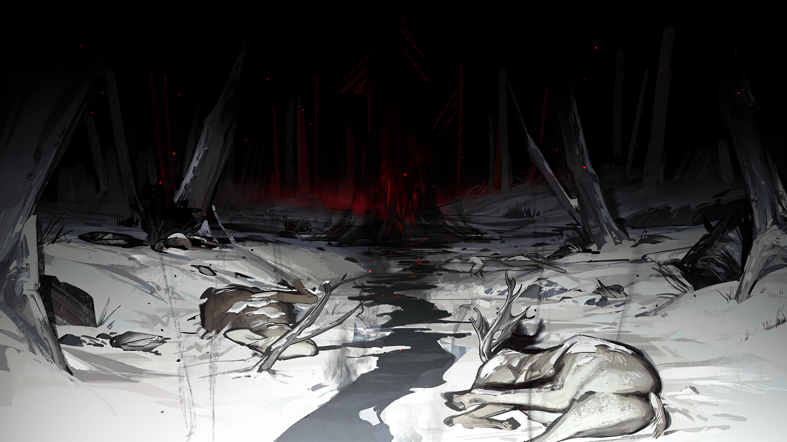

FRAME ANALYSIS
关键帧分析报告
时间戳 15:25 · 状态：严重损坏 · 来源：直播存档 756号中继
DOC-0325 · UNVERIFIED

15:25 原始帧（修复后）——画面主体颜色异常，右侧存在无法解析的轮廓。
▼ 异常特征
1. 雪花颜色异常
正常：RGB (255,255,255) 白色
异常：RGB (0,0,0) 黑色
正常：RGB (255,255,255) 白色
异常：RGB (0,0,0) 黑色
2. 未知物体
画面右侧出现黑烟状人形轮廓，无固定实体
画面右侧出现黑烟状人形轮廓，无固定实体
3. 人物定位
周符卿：画面中央 · 响石女士：未出现在画面中
周符卿：画面中央 · 响石女士：未出现在画面中
4. 档案匹配
异常特征符合机密档案记录：邪魔的利刃
（原编号 U15“皇帝的利刃”的失控形态）
⚠️ 该档案涉及敏感信息
异常特征符合机密档案记录：邪魔的利刃
（原编号 U15“皇帝的利刃”的失控形态）
⚠️ 该档案涉及敏感信息
分析由存档服务器自动生成 · 未经官方审核